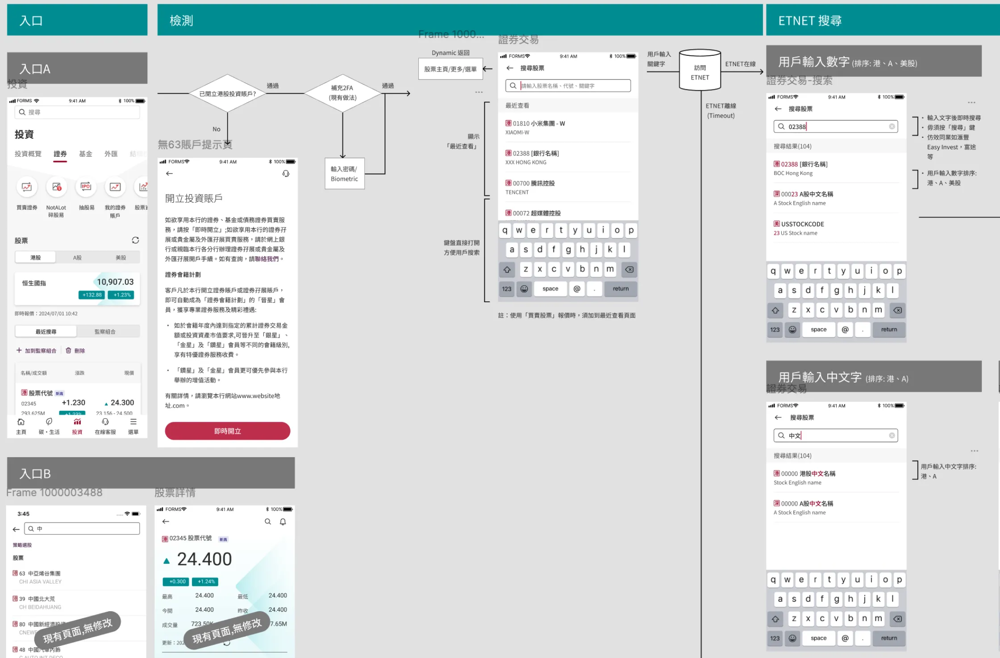
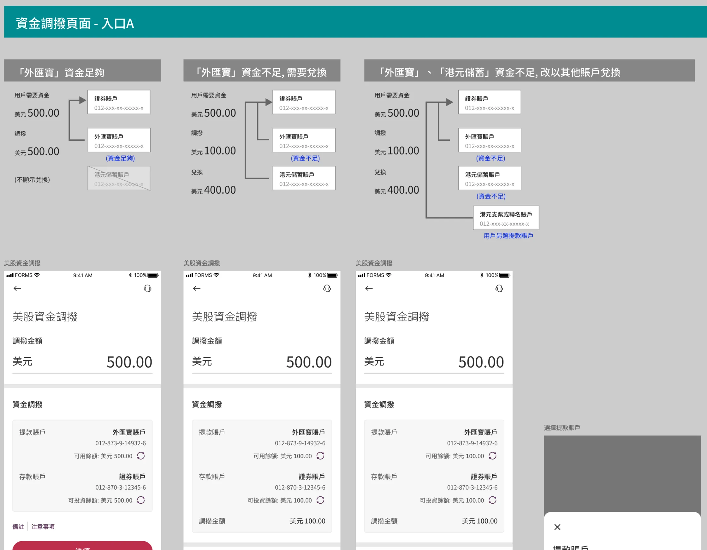
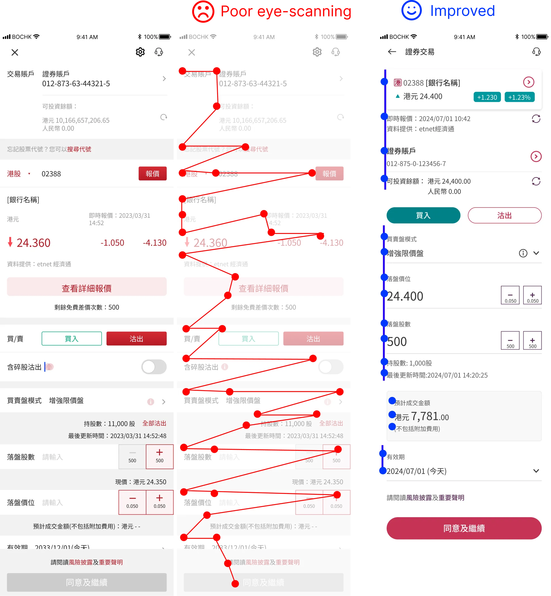
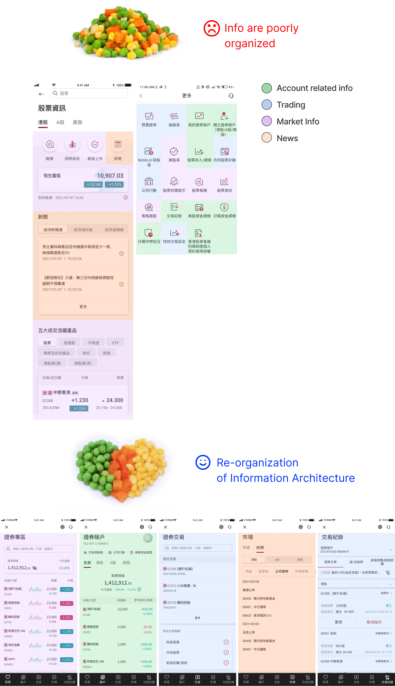
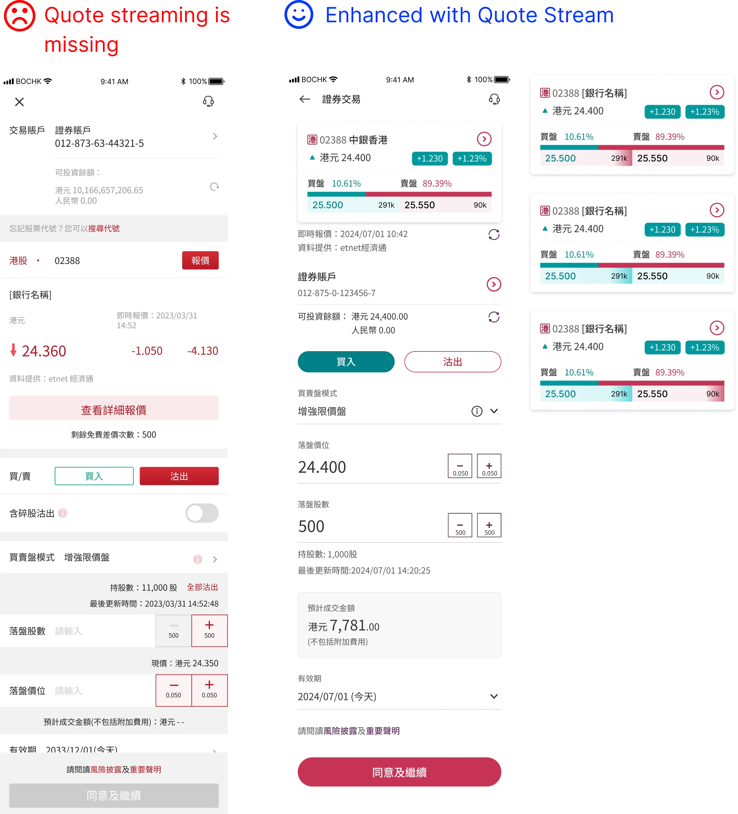
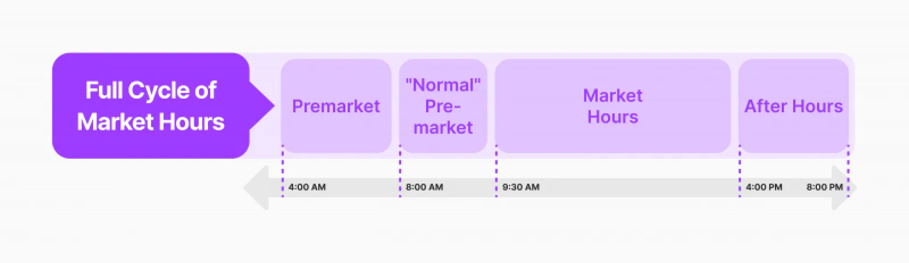
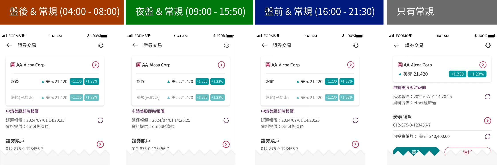
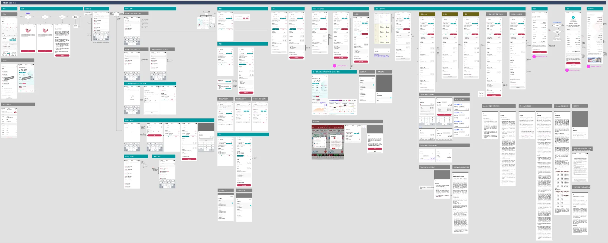
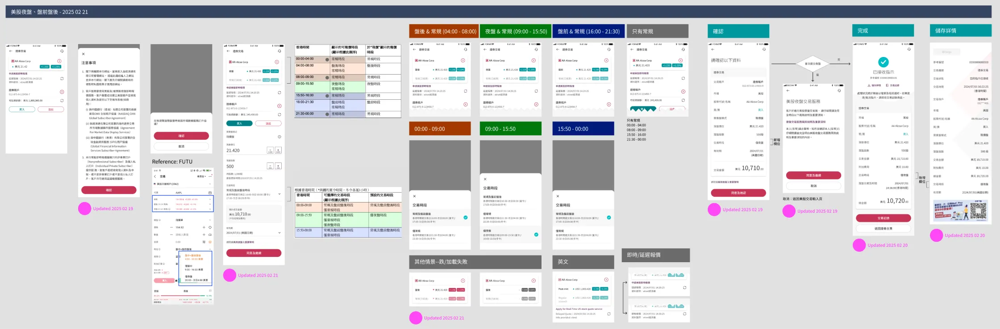

Introduction
The stock trading feature in the BOCHK app allows users to seamlessly trade a wide range of stocks, access real-time market data, view personalized watchlists, and track portfolio performance. It provides a secure, user-friendly interface with advanced tools for efficient investment management.
Final Delivery - At a Glance


Sell odd lots - legacy system handling

US stocks - fund transfer logic
My Role
I'm the lead product designer for this project. I collaborated with Business Analysts, Product Managers, and IT developers throughout this project.

Identifying Existing Problems
The Stock Trading experience was not well designed since its release in 2020. Here are the key problems we identified and addressed:
Problem 1: Improve Poor Eye Scanning
Poor eye scanning interface increases cognitive load, causing users to spend more time locating information. It disrupts efficient navigation by hiding key elements or creating confusion with a cluttered layout. This leads to frustration, errors, and slower task completion, ultimately diminishing the overall user experience.

Eye-scanning principle, before & after
Problem 2: Improve Number of Clicks
Key interactions such as searching for a US stock are often convoluted and require multiple clicks from customers, resulting in slow task completion.

Key interactions such as search, is incurring too many clicks
Problem 3: Improve Organization of Information
Key information is scattered throughout the application, making functions and information difficult to find. The navigation and overall IA needs to be redesigned.

Re-organization of information, before & after
Problem 4: Improve Quote Streaming
Quote streaming provides real-time price updates for stocks, displaying bid/ask prices, last trade, and volume. It ensures traders receive instant market data without manual refresh, enabling timely decisions based on live price movements and trends.

Re-organization of information, before & after
Enhanced U.S. Overnight Trading
U.S. stock overnight trading refers to buying and selling stocks outside regular market hours (9:30 AM to 4:00 PM ET), typically through after-hours (4:00 PM to 8:00 PM ET) or pre-market sessions (4:00 AM to 9:30 AM ET).


Final Result
100+ finalized screens were delivered in the end. For bank projects, various stakeholders including the platform owner, product managers, compliance, and IT have to agree on the solution. Excellent communication was maintained between these parties throughout the project.


Impact and Results
After launching the redesigned stock trading experience, we saw significant improvements across key metrics:
The streamlined navigation and improved eye-scanning design led to a significant reduction in time required to complete key trading tasks. Users reported feeling more confident in their trading decisions with the clearer information architecture and real-time quote streaming.
The Enhanced U.S. Overnight Trading feature saw particularly strong adoption, with 40% of eligible users engaging with after-hours trading within the first month of launch.
Bug Fixes
For a project of this scale, even though we have already fixed plenty of bugs before public release, there are bound to be minor bugs.
Post-launch Optimization
This is a crucial next step for every UX improvement or product launch. With informed, actionable insights, we are able to design a better experience for our consumers.
Continue to Design Better Experiences
To follow through our product roadmap and continue to stick to our design principles.